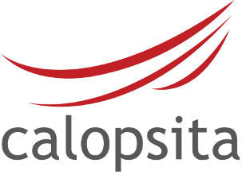

Sim, sim. Sabemos que nada substitui um quadro branco... mas, às vezes, ele não é uma opção.
Calopsita é uma ferramenta de gerenciamento de projetos para times ágeis distribuídos. Ele é simples e tenta ficar o mínimo possível no seu caminho - usabilidade é nossa primeira prioridade. O Calopsita foi feito por agilistas para agilistas. É ágil, mas não foi feito para uma metodologia específica - é flexível para que você possa trabalhar usando os métodos que quiser.